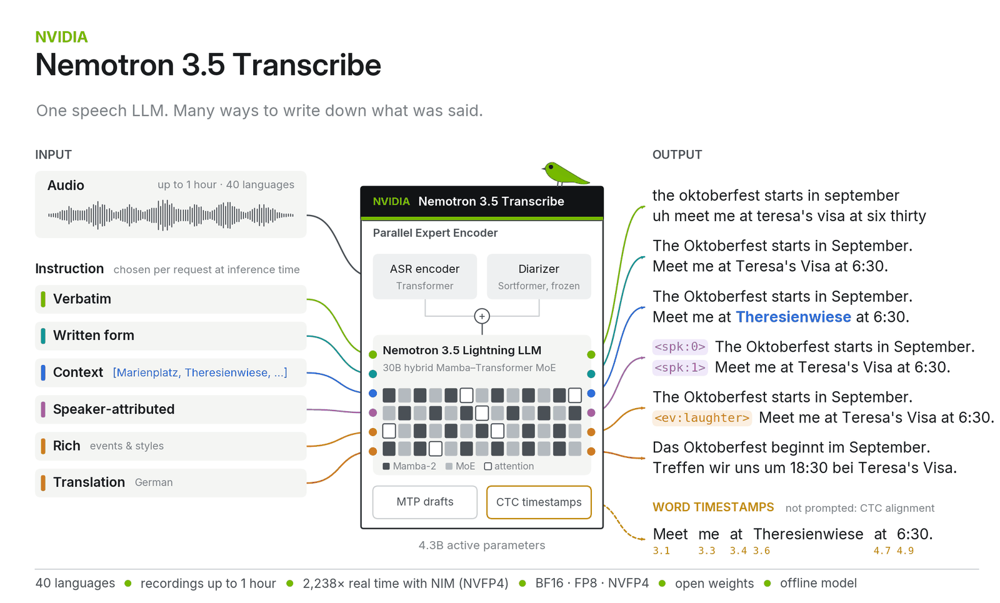
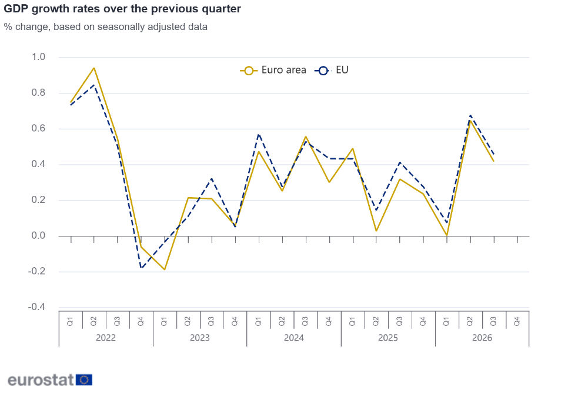

科技產品 T1

官方功能示意，非實際使用者錄音；效能數字為NVIDIA測試。 NVIDIA
NVIDIA 釋出 Nemotron 3.5 Transcribe，以自然語言指令調整四十種語言的轉錄方式
發佈時間
NVIDIA／Nemotron 3.5 Transcribe
NVIDIA開放可離線部署的語音模型，讓同一段錄音依指令轉為逐字稿、書面語或附說話者的紀錄。
- 支援40種語言與最長一小時錄音，亦提供語音翻譯及語言辨識。
- 可要求說話者歸屬及逐字時間戳記，並提供專有名詞作為上下文。
- 官方提供BF16、FP8、NVFP4及GGUF等版本，採OpenMDW-1.1授權。
完整報告收合報告
事件背景與影響
會議、客服與媒體逐字稿不必採用同一套格式；開放權重也讓敏感錄音有自行部署的選項。
事件與發佈依據
NVIDIA研究頁10/28公布模型及可下載權重，不將頁面午夜metadata當作精確發布時刻。
收錄紀錄
10/17–10/30十四份日報及同範圍產品表未收錄這次語音模型釋出；與Super VL不同事件。
尚待確認
排行榜與加速數字為官方測試，不等於任意裝置或真實會議都能達成；開放權重不表示推論硬體與維運免費。
相關實體與概念
NVIDIA、ASR、說話者分離、離線推論、NeMo Speech
科技產品 T2
三星新聞稿提供的Wallet全支付服務示意。 Samsung Newsroom 台灣
Samsung Wallet 公布十一月一日導入全支付掃碼付款，須更新應用程式並使用指定機型
發佈時間
Samsung／Samsung Wallet、全支付
台灣Galaxy手機使用者將能把全支付綁入Samsung Wallet，透過同一錢包進行掃碼付款。
- 官方預定2026年11月1日開始提供，適用機型依三星公告。
- Samsung Wallet須更新至6.8.67以上，再從新增卡片的掃碼付款項目綁定全支付。
- 原新聞發現來源使用Samsung Pay稱呼，本文依官方新聞稿採Samsung Wallet。
完整報告收合報告
事件背景與影響
手機錢包從卡片感應付款擴展至在地電子支付，減少付款時切換應用程式的步驟。
事件與發佈依據
台灣三星10/30新聞稿明列11/1正式導入，是新服務時程公告，而非10/30已全面開放。
收錄紀錄
前十四份日報及產品表未收錄本次整合；不以回饋優惠充當新品事件。
尚待確認
是否支援特定手機、商家與帳戶須以官方名單和實際服務為準；限時回饋有條件，不代表所有交易固定回饋5%。
相關實體與概念
Samsung Wallet、全支付、Galaxy、Samsung Knox、掃碼支付
全球焦點 1
續報｜卡達斡旋代表團返回德黑蘭，美伊談判仍未宣布協議
發佈時間
知情官員說卡達正協調美伊接觸，但雙方對核議題、封鎖與制裁先後順序仍有分歧。
- 代表團10/30早上到德黑蘭，Reuters消息人士稱斡旋與美方協調。
- 伊朗官方對外將議程描述為雙邊及區域議題，並未宣布接受停戰條件。
- 核談判是否先行，以及港口封鎖、石油制裁如何處理，仍是爭點。
完整報告收合報告
事件背景與影響
實際恢復斡旋提供外交出口，但尚不能據此認定戰爭即將結束或能源航運風險解除。
事件與發佈依據
Reuters10/30報導代表團週五實際返抵；伊朗官媒也確認到訪。
收錄紀錄
10/29已收錄卡達草案與伊朗反對說法；今日新增代表團返回現場推動接觸，不是重刊草案。
尚待確認
談判內容部分來自匿名知情者；代表到訪已獲交叉確認，協議條款與結果則未確認。
相關實體與概念
卡達、伊朗、美國、停戰斡旋、核議題、能源航運
全球焦點 2
續報｜剛果伊波拉死亡累計突破五千人，政府新數據凸顯防疫壓力
發佈時間
剛果民主共和國的伊波拉疫情死亡持續增加，衝突與醫療量能不足使偵測、收治和接觸者追蹤更困難。
- 當日政府數據顯示死亡超過5,000人，感染累計超過一萬人。
- 此波疫情涉及Bundibugyo型病毒；不能把其他型別的核准疫苗直接視為適用。
- Reuters指八個省受影響，許多死亡發生在治療中心之外。
完整報告收合報告
事件背景與影響
傷亡規模上升反映疫情並未受到控制，也提高區域公共衛生協作的重要性。
事件與發佈依據
Reuters10/30引述政府當日統計；美東16:17已刊出，位於凍結截點前。
收錄紀錄
10/28已收錄確診10,060例及死亡4,887人；今日新增死亡超過5,000的官方數據。
尚待確認
累計統計會因補報或分類調整而變動；本文為新聞整理，不提供個人診療建議。
相關實體與概念
剛果民主共和國、伊波拉、Bundibugyo、疫情監測、接觸者追蹤
全球焦點 3
衣索比亞流離失所者營地遭無人機襲擊，救援者稱至少十五人死亡
發佈時間
阿姆哈拉地區Jari 2營地遭襲，救援消息稱至少15人死亡，包括兒童，倖存者轉往學校避難。
- 營地原收容超過1,700名流離失所者；消息人士稱死者包括五名兒童。
- 地方官員稱正協助36名傷者接受醫療。
- Reuters受訪者表示當時營地附近沒有交戰；責任方仍未確定。
完整報告收合報告
事件背景與影響
已逃離戰火的平民仍遭攻擊，凸顯非洲之角衝突中的保護缺口與區域外溢風險。
事件與發佈依據
襲擊發生於10/29；Reuters10/30取得救援及地方消息的傷亡確認，採首次可靠發布基準。
收錄紀錄
前十四報沒有Jari 2營地這次襲擊；10/17提格雷行政任命不是同一事件。
尚待確認
死亡數來自救援者及居民，政府發言人未立即回應；不能將目擊無人機直接等同已證實攻擊方。
相關實體與概念
衣索比亞、Amhara、Jari 2、無人機、流離失所者、平民保護
全球焦點 4

官方快估圖：第三季歐元區0.4%、歐盟0.5%。 Eurostat／European Union
歐元區第三季 GDP 初估季增百分之零點四，歐盟成長百分之零點五
發佈時間
歐洲經濟維持擴張，但歐元區季增率由前季0.6%降至0.4%，各國表現仍不一致。
- 歐元區季增0.4%、年增1.3%；歐盟季增0.5%、年增1.5%。
- 德國季增0.2%、西班牙0.6%，法國減少0.1%，義大利持平。
- 本次估算涵蓋19個成員國資料，約占歐元區GDP的96%；11/13將再公布估計。
完整報告收合報告
事件背景與影響
成長並未停止，但速度放慢；通膨與能源壓力下，總體成長不能代表每個國家都在復甦。
事件與發佈依據
Eurostat官方10/30 10:00 UTC公布第三季初步快估。
收錄紀錄
前十四報未收錄這次第三季初估；不是美國GDP或較早歐洲預測的重複。
尚待確認
資料不完整且可修訂；愛爾蘭5.5%的快估屬實驗性統計，不宜直接推論一般家庭所得同步成長。
相關實體與概念
Eurostat、歐元區、歐盟、GDP、季節調整、初步快估
全球焦點 5
俄羅斯《新報》宣布十一月九日停止運作，編輯部指官方壓力使其難以維持
發佈時間
Novaya Gazeta表示將於11月9日關閉辦公室與伺服器，結束其在俄羅斯長期進行的獨立調查工作。
- 報社1993年創立，長期以揭露貪腐與人權問題聞名。
- 編輯部稱遭逐出使用多年的辦公室，並失去必要的財務支持管道。
- 11/9是預告停止日期，不是10/30已完成全部關閉。
完整報告收合報告
事件背景與影響
重要調查媒體退出俄羅斯國內，將進一步削弱對公共權力的監督及多元資訊供應。
事件與發佈依據
10/30公開聲明；AP當日14:00 UTC刊載，內部先前討論不代替公開宣布日期。
收錄紀錄
前十四份日報未收錄這次關閉公告。
尚待確認
關閉原因的指控出自編輯部；AP稱俄方未立即回應，未來是否重啟及時程均不確定。
相關實體與概念
Novaya Gazeta、俄羅斯、新聞自由、調查報導、Anna Politkovskaya
全球焦點 6
G20 外長會在亞特蘭大開幕，歐方反對與俄方同框促使主辦方取消合照
發佈時間
戰爭與成員參與爭議在G20外長會浮現，主辦方取消合照，形成共識的難度仍高。
- 會議於10/30至31日舉行，俄國外長Lavrov參加。
- AP報導歐洲官員反對與俄方同框，主辦方取消傳統合照。
- Reuters指出南非未獲邀等問題加劇分歧；截點尚不能把聯合公報成敗寫成定案。
完整報告收合報告
事件背景與影響
外交協調機制若無法凝聚共同立場，能源、航運與安全合作也將受到限制。
事件與發佈依據
10/30正式會議及合照取消進展；不是對週末議程的舊預告。
收錄紀錄
前十四報未收錄這次亞特蘭大外長會開幕與合照處置。
尚待確認
外交官對共識的預期不是最終結果；本文保留會議仍在進行的狀態。
相關實體與概念
G20、亞特蘭大、Marco Rubio、Sergei Lavrov、南非、多邊外交
全球焦點 7
蘇丹軍方領袖在莫斯科提出礦業與紅海經濟區合作，尚未宣布完成協議
發佈時間
蘇丹提出讓俄方參與金、銅等採礦，以及紅海經濟區和鐵路建設，尋求深化戰時經濟合作。
- Burhan向俄方提出礦場開發機會，並建議設置紅海自由經濟區。
- 構想包含燃料、穀物倉儲及鐵路物流合作。
- 報導中的會談提案不等於礦權已核准，也不是已建成海軍基地的證據。
完整報告收合報告
事件背景與影響
紅海物流與礦業利益可能改變外部力量參與蘇丹的方式，但提議仍有執行與治理風險。
事件與發佈依據
Burhan10/30在莫斯科與Putin會談並提出具體經濟合作構想。
收錄紀錄
前十四報未收錄此次會談；與10/21阿卜耶市場空襲不同事件。
尚待確認
公開資訊主要為會談陳述及通訊社轉述；資金、契約、地方控制與實際落地時程均待確認。
相關實體與概念
蘇丹、Abdel Fattah al-Burhan、俄羅斯、Vladimir Putin、紅海、礦業
全球焦點 8
UNHCR 發動五千萬美元冬季募款，估計四國九百萬人需要額外援助
發佈時間
烏克蘭、阿富汗、敘利亞和黎巴嫩面臨冬季保暖需求，資金削減及能源漲價使援助更吃緊。
- UNHCR希望向個人與民間部門募得至少5,000萬美元，比上年多300萬。
- 九百萬是四國不同冬援與住所需求估計的加總，不是新增加的難民數。
- 款項將支援取暖設備、保暖毯、衣物及受損住宅修復等用途。
完整報告收合報告
事件背景與影響
冬季失去取暖與可居住住所，可能進一步迫使已受戰爭衝擊的家庭再次遷移。
事件與發佈依據
UNHCR10/30正式啟動2026至27年冬援募款；當日歐洲白天已有媒體報導。
收錄紀錄
前十四報未收錄這次跨四國募款；不同於10/21阿富汗糧食危機評估。
尚待確認
募款目標不是已到位資金，也不保證覆蓋全部需求；各國估計使用的統計定義並不完全相同。
相關實體與概念
UNHCR、冬季援助、烏克蘭、阿富汗、敘利亞、黎巴嫩
全球焦點 9
續報｜Binance 披露初步入侵途徑，研究者估失竊六十三億美元，公司稱約三十億已凍結
發佈時間
Binance稱攻擊者從受害員工裝置進入服務容器並提交未授權提款；研究者將行動歸因北韓駭客。
- 研究者估計失竊至少63億美元，但調查尚未完成，數字可能修訂。
- 公司發言人稱合作夥伴已凍結約30億美元；凍結不等於已全數返還用戶。
- TRM Labs及Elliptic提出北韓歸因；Binance稱未見私鑰外洩證據。
完整報告收合報告
事件背景與影響
這不僅涉及交易所流動性，也顯示個別開發者裝置與高價值金融系統間的權限隔離風險。
事件與發佈依據
TechCrunch10/30 14:00:25 UTC首次刊出研究歸因及初查，並取得當日公司資產凍結說明。
收錄紀錄
10/30已收錄暫停提款且金額未確認；今日新增員工裝置遭入侵說法、北韓歸因及約30億美元凍結進度。
尚待確認
歸因出自安全研究機構，非本文獨立鑑識；公司「用戶資金安全」聲明仍待儲備及完整調查證據支持。
相關實體與概念
Binance、TRM Labs、Elliptic、北韓、權限隔離、資產凍結
全球焦點 10
德國十月通膨初估降至百分之二點八，能源價格漲幅仍達兩位數
發佈時間
德國年通膨由九月3.3%降至2.8%，核心物價也放慢，但能源價格相較去年仍顯著上漲。
- CPI與歐盟調和指數HICP年增率初估均為2.8%。
- 排除食品與能源的核心通膨為2.1%，能源價格年增12.2%。
- CPI較前月下降0.2%，最終十月數據預定11/11發布。
完整報告收合報告
事件背景與影響
整體通膨下降不等於家庭已感受到物價回到原點；能源壓力和貨幣政策的平衡仍須觀察。
事件與發佈依據
Destatis10/30第382號新聞稿公布十月初估，Reuters同日13:13 UTC已報導。
收錄紀錄
前十四報未收錄這次十月初估；不同於ECB利率決策或美國PCE資料。
尚待確認
數字屬初估，且德國不是整個歐元區；物價增幅放慢不等於所有商品絕對價格下跌。
相關實體與概念
德國、Destatis、CPI、HICP、核心通膨、能源價格
研究備註
時間、來源與後續追蹤
研究截點 2026-10-31 07:56:57（Asia/Taipei）
研究時間與範圍
研究截點：2026-10-31 07:56:57（Asia/Taipei）。全球新聞：2026-10-30 07:56:57 至 2026-10-31 07:56:57（Asia/Taipei）。科技產品：2026-10-17 07:56:57 至 2026-10-31 07:56:57（Asia/Taipei）。